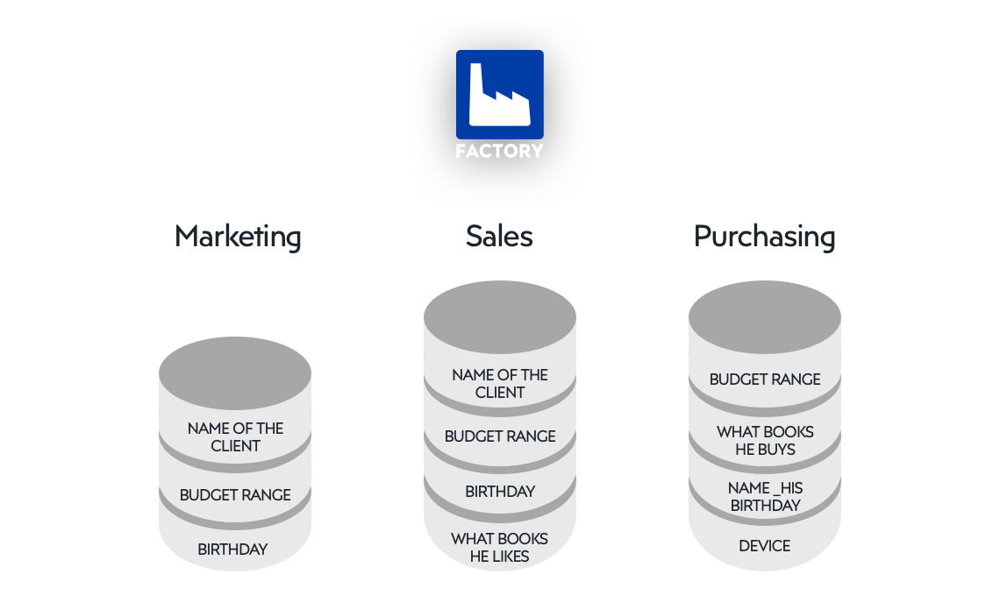

Data Hackathons: Jumpstarting Your Test Organization’s Digital Transformation
| Nathan Cook | Capt Troy Soileau | Maj Matthew McCormack |
| 96th Operations Group | 96th Cyberspace Group | USAF Test Pilot School |
| Air Force Test Center Department of the Air Force |
Abstract
The United States Department of the Air Force’s (DAF’s) Air Force Test Center (AFTC) completed its third iteration of the AFTC Data Hackathon in August of 2022. “Hackathons” are low risk, high return investments that can jumpstart your test organization’s digital transformation. Hackathons for software engineering have existed for more than two decades in the disciplines of cryptography, web development, and apps. With the advent of data science, big data, machine learning, and artificial intelligence, “Data Hackathons” bring the hackathon model to these data-centric disciplines. A Data Hackathon allows your organization to: explore data infrastructure options, expose “data hackers” to your organization’s test and management data, evolve third-party and in-house scripts and apps to solve real-world problems, and expand awareness of the state of the art digital technologies within your organization. The future of test will require ever increasing data volume, variety, and velocity. The pace of improvement in tools and techniques will continue to accelerate. Data Hackathons can focus your test teams and provide momentum for your organization’s digital transformation.
Acronyms, Abbreviations, Symbols
| AFTC | Air Force Test Center |
| API | Application Programming Interface |
| AWS | Amazon Web Services |
| CDAO | Chief Data and Artificial Intelligence Office |
| DAF | United States Department of the Air Force |
| EC2 | Elastic Compute Cloud |
| GFE | Government Furnished Equipment |
| S3 | Simple Storage Service |
| VPN | Virtual Private Networks |
Disclaimer
Any mention of specific vendors, platforms, or tools is factual history of their use, and in no way an endorsement by the authors, the Department of the Air Force, the United States Government, or a sponsorship of the vendors, platforms, or tools themselves.
Introduction
The United States Department of the Air Force’s (DAF’s) Air Force Test Center (AFTC) completed its third iteration of the AFTC Data Hackathon in August of 2022 (“Data Hackathon” n.d.; Cloys 2022). “Hackathons” are low risk, high return investments that can jumpstart your test organization’s digital transformation. Hackathons for software engineering have existed for more than two decades in the disciplines of cryptography, web development, and apps. With the advent of data science, big data, machine learning, and artificial intelligence, “Data Hackathons” bring the hackathon model to these data-centric disciplines.
This paper will explain the benefits of implementing a Data Hackathon in your flight test organization. In addition, a framework for planning, provisioning, executing, and following up on a Data Hackathon is provided, which can then be modified as required to meet the opportunities and constraints of your organization.
Benefits
A Data Hackathon allows your organization to:
- explore data infrastructure options,
- expose “data hackers” to your organization’s test and management data,
- evolve third-party and in-house scripts and apps to solve real-world problems, and
- expand awareness of the state of the art digital technologies within your organization.
Explore
Explore data infrastructure options. Data infrastructure is a prerequisite for working with data. Monica Rogati, among others, made a comparison with Maslow’s hierarchy of needs (Maslow 1943) and created “The Data Science Hierarchy of Needs” (Rogati 2017), depicted as a triangle or pyramid, Figure 1. Collection, movement, and storage are at the base of the pyramid. This representation is chronological, following the flow of data from source to working location, followed by techniques to explore, understand, and organize, before generating algorithms and models for inference, prediction, and influencing decisions.

The exact sequence, though, is not essential for the bottom two layers. The basic components of infrastructure are:
- Store (sometimes called “data at rest”)
- Compute
- Transport (sometimes called “data in motion”)
A Data Hackathon directly stresses all three components, by design. Your organization may have been considering adding or modifying aspects of each infrastructure component. The hackathon is an opportunity to put these updates in action and uncover pain points that would remain invisible without direct application of focused effort. The hacker teams may use the components in ways that were not anticipated by the originators, as well.
AFTC Data Hackathon Infrastructure
The AFTC Data Hackathon made use of infrastructure already existing and available to DAF members, but which may not be used to their full potential. To date, the primary platforms used, in chronological order:
- DAF CDAO “VAULT” providing access to:
- Amazon Web Services (AWS) Elastic Compute Cloud (EC2) compute and Simple Storage Service (S3) store in the cloud
- Databricks notebooks running Python and R orchestrated with Apache Spark
- Hue SQL assistant
- Apache Zeppelin notebooks running Python orchestrated with Apache Spark
- Plotly Dash dashboard front ends with Python visualizations
- Microsoft 365 including:
- Microsoft Azure compute and store in the cloud
- Excel
- Teams
- SharePoint
- Power Automate
- Power Apps
- Power BI
- DAF CDAO “Envision” providing access to:
- AWS EC2 and S3
- Palantir Foundry
- Python and R scripting
- Data Application Programming Interfaces (APIs)
To the maximum extent, the hacker teams used government-furnished equipment (GFE), including computers, network connections, and virtual private networks (VPNs), to ensure any outcomes of the event could be implemented within the significant constraints of the DAF network environment.
Expose
Expose “data hackers” to your organization’s test and management data. Data silos, also known as information silos, are widely acknowledged as detrimental to organizational health, as evidenced by a quick web search for "data silos" OR "information silos". The disadvantages are many, including:
- Duplication of data, because everyone feels as if they need a local copy, or out of simple ignorance of the existence of the data elsewhere in the organization; results in loss of configuration management and authoritative sources
- Lack of diversity, because no fresh eyes see the data, no new ideas or different perspectives can be heard; results in stagnation of process and thinking
- Increased friction, because even the simplest data requests must be manually handled, sometimes literally so, making processes vulnerable to single points of failure if an individual is sick, on travel, or on leave; results in increased frustration and decreased efficiency and effectiveness
Figure 2 shows a conceptual example of duplicated information in different teams of the same organization, with no connections between them (http://factory.dev n.d.). Such an organization would conceivably suffer from all of the disadvantages above.

Even without doing the heavy lifting of breaking down data silos and forging the infrastructure, policy, tooling, and more required for a sustainable solution, a Data Hackathon can:
- identify and highlight duplication
- bring in diversity of experience, skill, and even culture
- reduce friction by creating interpersonal connections and building trust across the organization
AFTC Data Hackathon exposure to data
Evolve
Expand
Lessons Learned
Knowledge learned along the way and of value to the next brave soul to work in this area.
Conclusions
Points to be drawn from the material and data provided.
Acknowledgement
To extend thanks in support of the paper.
References
Citations available on Zotero in the hackathon-paper Group, https://www.zotero.org/groups/4761353/hackathon-paper
{kind=link}
Biography/Photograph
A brief paragraph(s) of the author(s). A photograph is highly recommended, but of course optional.